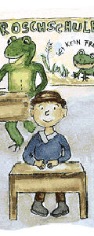

The three languages

An aged count once lived in Switzerland, who had an only son,
but he was stupid, and could learn nothing. Then said the father,
"Hark thee, my son, I can get nothing into thy head,
let me try as I will.Thou must go from hence,
I will give thee into the care of a celebrated master,
who shall see what he can do with thee.
" The youth was sent into a strange town,
and remained a whole year with the master.
At the end of this time, he came home again, and his father asked,
"Now, my son, what hast thou learnt?" - "Father,
I have learnt what the dogs say when they bark.
" - "Lord have mercy on us!" cried the father;
"is that all thou hast learnt? I will send thee into another town,
to another master." The youth was taken thither,
and stayed a year with this master likewise.
When he came back the father again asked, "My son, what hast thou learnt?
" He answered, "Father, I have learnt what the birds say.
" Then the father fell into a rage and said, "Oh, thou lost man,
thou hast spent the precious time and learnt nothing;
art thou not ashamed to appear before mine eyes?
I will send thee to a third master,
but if thou learnest nothing this time also,
I will no longer be thy father.
" The youth remained a whole year with the third master also,
and when he came home again, and his father inquired,
"My son,what hast thou learnt?" he answered, "Dear father,
I have this year learnt what the frogs croak.
" Then the father fell into the most furious anger,
sprang up, called his people thither, and said,
"This man is no longer my son, I drive him forth,
and command you to take him out into the forest,
and kill him." They took him forth,
but when they should have killed him, they could not do it for pity,
and let him go,and they cut the eyes and the tongue out of a deer
that they might carry them to the old man as a token.
The youth wandered on,
and after some time came to a fortress where he begged for a night's lodging.
"Yes," said the lord of the castle,
"if thou wilt pass the night down there in the old tower,
go thither; but I warn thee, it is at the peril of thy life,
for it is full of wild dogs, which bark and howl without stopping,
and at certain hours a man has to be given to them, whom they at once devour.
" The whole district was in sorrow and dismay because of them,
and yet no one could do anything to stop this. The youth,
however, was without fear, and said, "Just let me go down to the barking dogs,
and give me something that I can throw to them; they will do nothing to harm me.
" As he himself would have it so, they gave him some food for the wild animals,
and led him down to the tower. When he went inside, the dogs did not bark at him,
but wagged their tails quite amicably around him, ate what he set before them,
and did not hurt one hair of his head. Next morning, to the astonishment of everyone,
he came out again safe and unharmed, and said to the lord of the castle,
"The dogs have revealed to me, in their own language, why they dwell there,
and bring evil on the land. They are bewitched,
and are obliged to watch over a great treasure which is below in the tower,
and they can have no rest until it is taken away, and I have likewise learnt,
from their discourse, how that is to be done." Then all who heard this rejoiced,
and the lord of the castle said he would adopt him as a son
if he accomplished it successfully. He went down again,
and as he knew what he had to do, he did it thoroughly,
and brought a chest full of gold out with him.
The howling of the wild dogs was henceforth heard no more;
they had disappeared, and the country was freed from the trouble.
After some time he took it into his head that he would travel to Rome.
On the way he passed by a marsh, in which a number of frogs were sitting croaking.
He listened to them, and when he became aware of what they were saying,
he grew very thoughtful and sad. At last he arrived in Rome,
where the Pope had just died,
and there was great difficulty as to whom they should appoint as his successor.
They at length agreed that the person should be chosen as pope
who should be distinguished by some divine and miraculous token.
And just as that was decided on, the young count entered into the church,
and suddenly two snow-white doves flew on his shoulders and remained sitting there.
The ecclesiastics recognized therein the token from above,
and asked him on the spot if he would be pope. He was undecided,
and knew not if he were worthy of this, but the doves counselled him to do it,
and at length he said yes. Then was he anointed and consecrated,
and thus was fulfilled what he had heard from the frogs on his way,
which had so affected him, that he was to be his Holiness the Pope.
Then he had to sing a mass, and did not know one word of it,
but the two doves sat continually on his shoulders, and said it all in his ear.